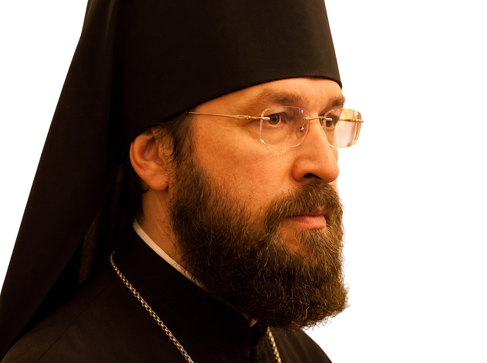

Архимандрит Мелхиседек (Артюхин) — официальный сайт

Так возлюбил Бог мир, что отдал сына Своего!
Новости
9
августа
Беседа
Как жить после развода? Ответ священника
Что помогает настроиться на духовную жизнь, есть ли в ней правила и какие вопросы не стоит обсуждать с батюшкой.
Храм Покрова Пресвятой Богородицы в Ясеневе, приходской дом
14
августа
Лекция
Куда ведут «ченнелинг» и «молитвенные медитации»?
Вера или магия, духовная жизнь или оккультизм — что доставит душе человека желанное счастье.
Просветительский центр при храме апостолов Петра и Павла
27
августа
Богослужение
Успение Пресвятой Богородицы. Всенощное бдение
Праздничная служба с чтением акафиста и проповедью после литургии.
Храм Покрова Пресвятой Богородицы в Ясеневе
3
сентября
Беседа
Строились ли храмы в местах с «хорошей энергетикой»?
Как на самом деле выбирали места для христианских храмов и причём здесь мистическая энергия.
Приходской дом в Ясеневе, малый зал
11
сентября
Лекция
Толкование Евангелия от Марка. Первая встреча цикла
Разбор по главам: исторический контекст, святоотеческие толкования и приложение к сегодняшней жизни.
Просветительский центр при храме апостолов Петра и Павла
21
сентября
Богослужение
Рождество Пресвятой Богородицы. Литургия
Праздничная литургия, по окончании — беседа с прихожанами и ответы на вопросы.
Храм святых апостолов Петра и Павла
«Один человек в луже видит грязь, а другой — отражение неба.
Дай Бог, чтобы у нас был правильный взгляд на всё:
на себя, родных, близких, обстоятельства жизни»